Server Installation Guide
This page explains in an easy step by step guide how to manually setup your
VPS or server and get the software running for
Jericho Comms on Ubuntu Server 16.04.x Long Term Support (LTS).
Open source is the best way as it's auditable and less likely to contain backdoors. Compiling your
own from source code is even safer if you know how to do that. If you do not like Ubuntu, you
can use whatever Linux or Unix distribution you want, it is really just setting up a Linux,
Apache, MySQL & PHP (LAMP) stack and configuring it.
You need approximately 1 hour of time and some average computer skills. Be sure to read
each step carefully. NB: This guide is no longer maintained, it is preferred to
use the new guide with automated installation script.
Table of Contents
- Sign up for a Virtual Private Server
- Download and install Ubuntu Server
- Connect to your server
- Switch user to root
- Update the server
- Installing MySQL, PHP and Apache
- Test your web server
- Test the PHP install
- Test MySQL
- Uploading the program onto the server
- Verifying the integrity and authenticity of the file
- Extracting the server files
- Apache virtual host configuration
- Build the Skein library
- Run the database script
- Editing the configuration file
- Create and install a TLS certificate
- Setup a new secure browser profile
- Securing your new Firefox profile
- Setting up the firewall
- Network Time Protocol configuration
- Test the server code
- Summary
Sign up for a Virtual Private Server
There are a number of quality VPS providers around. You will need to
do some research on your own. Try
finding one that is not in any of the
Five Eyes countries
(US, UK, Canada, Australia and New Zealand). Perhaps somewhere in Europe with better privacy laws
e.g. Finland. Better privacy laws mean they need a proper warrant to hack or shut down your
server whereas countries like the UK
can just do whatever they want.
Some of the other European countries co-operate with the NSA however
in a wider spying alliance.
So Brazil or Iceland may be a better bet.
You should only need the most basic server in terms of CPU speed, memory and disk space because
the software is not resource intensive. Around 10 Euros (11 USD) per month is probably fine. That
will get you around 1 CPU core, 512 MB of RAM and 10 GB of disk space which is plenty to
run the server software.
Avoid VPS providers that use OpenVZ because
each VPS on the same physical server shares the same Linux kernel. That means you cannot have
full control over the VPS to keep the system time properly synchronized with an NTP server.
KVM based VPSs use
their own kernel which gives you much more control.
Alternatively if you want to run your own server on your own network, that is even better.
This would be the most secure option as you can administer the server locally. This means one less
port open on the public network interface. The clients and server share a 512 bit symmetric API key
for authentication of data going back and forth. However you still need to get that key onto the server.
When managing the server via the internet, the security is only as secure as the SSH connection.
SSH is hard to secure against active MITM attacks unless you are
certain of the correct host key fingerprint. For your first connection to the VPS
you will not be sure of the server's true fingerprint. You could however try finding it by logging
in via the HTTPS web management console or asking your VPS provider directly. Then again they will
need to send it to you via encrypted email and you still need to verify their public key somehow.
So it ends up being a lot of extra effort. SSH also currently does not have ciphers that are secure against
quantum computers.
Download and install Ubuntu Server
If using a VPS, select one of the pre-made Ubuntu 16.04.x LTS images. The online provider will
do all the installation automatically for you and initialise your VPS.
Otherwise if you're setting up your own server, download the latest version
of Ubuntu Server 16.04.x LTS. Write the image to a CD/DVD/USB drive, then boot from the install image on CD/DVD/USB drive and run
through the installation. This should be pretty self explanatory but there is a step-by-step guide with screenshots
here
if you need them. Make sure your server has a public, static IP address so your group's users
can connect to it reliably over the internet.
At the software selection screen be sure to select OpenSSH server so it gets installed and you can log into your server
remotely with SSH. SSH will likely be enabled by default on a VPS.
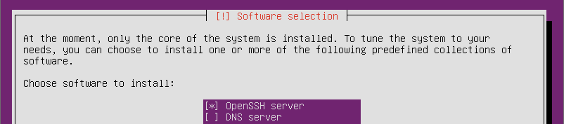
Connect to your server
Assuming your operating system is all installed, you can now log into your VPS/server with
SSH. If you are connecting to your server from a Windows machine you
can use PuTTY, for example:
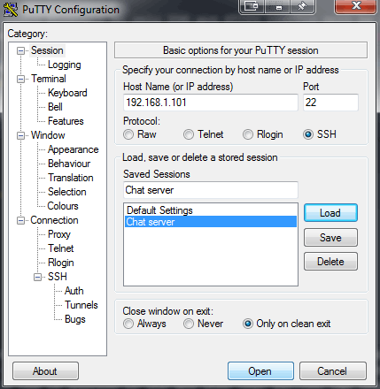
Or from Linux you can use the command line: ssh -p 22 username@ipaddress. Swap out
username for the username on your server. You will have created a user account on installation or if using a VPS
they probably set up the root account so use that. Swap out ipaddress with the public IP address of
your server.
Switch user to root
If you're using a VPS they may have just given you the details for the root account, so you
should already be logged in as root and you won't need to do this step.
Otherwise if you installed Ubuntu from scratch type sudo su to switch to root. Enter your
user password. This saves entering sudo before every command after this point.
Update the server
Run apt-get update to refresh the list of all available updates and security patches for your system. Then run
apt-get upgrade to apply the updates.
Installing MySQL, PHP and Apache
To install MySQL, PHP and Apache, run the following command:
apt-get install lamp-server^
If you are curious about what the ^ does, this is explained
here. This will start the installation automatically.
You will need to type Y when prompted to continue. Also be sure to enter a MySQL password when asked. You will
need the password later so remember it.
The PHP Mcrypt extension is required to
collect cryptographically secure random numbers in PHP. Random data is generated for each
request received and used with
Double HMAC Verification
to prevent timing attacks on the server authentication protocol. You can install the Mcrypt
extension with the following commands:
apt-get install php7.0-mcrypt
phpenmod mcrypt
Test your web server
Open your web browser and browse to the server IP address, for example, http://192.168.1.101/. This guide setup
the server on a web server in the LAN hence the private IP address. This should bring up a page like this:
Test the PHP install
Now make sure the PHP installation is working. This can be done by creating a test file with the following command:
echo "<?php phpinfo();" | tee /var/www/html/testing.php.
After that, restart the web server with service apache2 restart.
Now you should be able to browse to the server IP address, for example, http://192.168.1.101/testing.php in your
web browser which should show a page like below and will show all the default PHP settings.
Test MySQL
Now test that MySQL works with the command mysql -p. It will prompt you for the password you created on
installation. You should now be in a MySQL prompt like this:
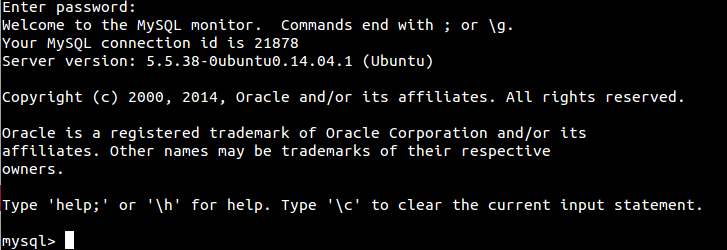
Type the command show databases; which should show 4 default databases. Now exit out of MySQL by typing
exit; or doing a Ctrl + C keyboard command.
Uploading the program onto the server
Now that Linux, Apache, MySQL and PHP are running it's time to install get the server code running. The easiest way to get it
onto the server would be to use the command line:
wget https://joshua-m-david.github.io/jerichoencryption/files/jericho-v1.5.2.tar.gz
You also need to download the signature file to verify that the download is authentic:
wget https://joshua-m-david.github.io/jerichoencryption/files/jericho-v1.5.2.tar.gz.asc
This will download the two files and put them inside your current working directory. You can list them with ls -l.
If the files are there you can skip to the next step.
If for some reason you are unable to download the files from the website you can always download
them from Freenet using the links on the
Download page, then copying the files manually to the server. If
you want to copy them to the server from your Windows machine you can use
WinSCP and connect to your server using the same credentials like you did
earlier with PuTTY. Then it's a basic drag and drop operation.
If wanting to transfer the files from your Linux machine to the server you can use the following command:
scp /path/on/local/machine/jericho-v1.5.2.tar.gz username@ipaddress:~
Be sure to swap out username for the username on the server and swap out ipaddress for the IP address
of the server. It should prompt you for the password. The ~ character will put the file in the home directory for
your account so it will be available as soon as you log into the server. Instead of the ~ character you can swap
that for the destination path on the server if you wish e.g. /var/www/html/.
Verifying the integrity and authenticity of the file
It's very important you verify the integrity and authenticity of the downloaded file so you know the file is authentic. Otherwise an attacker could have performed a MITM attack and swapped out the file for one with a backdoor in the encryption code.
Verifying by file hashes
First verify that the file was downloaded correctly using the hashes found on the download page:
sha384sum jericho-v1.5.2.tar.gz | grep "ad5586e073131c019c3af5996dd123f1cf29de1817d5d1b65fc9cfcd6f00441139a3556dce38f434329d95303ae58965"
If the checksum matches it will display the matching hash output on a line on the command line, for example:
ad5586e073131c019c3af5996dd123f1cf29de1817d5d1b65fc9cfcd6f00441139a3556dce38f434329d95303ae58965 jericho-v1.5.2.tar.gz
You can also verify using SHA-2 512 and
Whirlpool hashes on the download page by using
sha512sum and whirlpoolsum commands in the format above, along with the corresponding hashes found on the
download page. It will tell you to install whirlpoolsum so just follow the
instructions on the screen.
If nothing is returned on the command line, then the file is a mismatch and you will have to redownload it.
You can try downloading it from another source such as FreeNet as well (see the
download page for a link).
Verifying by GnuPG signature
This will verify that the download was actually created by us. The key ID for each download is listed on the
download page. Import our public key which can be used to verify the file:
gpg --keyserver x-hkp://pool.sks-keyservers.net --recv-keys 0xDC768471C467B6D0
After importing the key you should verify that the key fingerprint is correct with
gpg --fingerprint 0xDC768471C467B6D0. You should see:
pub 4096R/C467B6D0 2013-09-25 [expires: 2018-03-27]
Key fingerprint = CF3F 79EE 0114 59BA 0A59 9E9C DC76 8471 C467 B6D0
uid Joshua M. David (Jericho Encryption) <jerichoencryption@rediffmail.com>
sub 4096R/BE456DA7 2013-09-25 [expires: 2018-03-27]
Then run gpg --verify jericho-v1.5.2.tar.gz.asc jericho-v1.5.2.tar.gz to verify the signature. This should give you a
message saying Good signature similar to the following:
gpg: Signature made Fri 17 Jun 2016 {time}
gpg: using RSA key 0xDC768471C467B6D0
gpg: Good signature from "Joshua M. David (Jericho Encryption) <jerichoencryption@rediffmail.com>"
gpg: WARNING: This key is not certified with a trusted signature!
gpg: There is no indication that the signature belongs to the owner.
Primary key fingerprint: CF3F 79EE 0114 59BA 0A59 9E9C DC76 8471 C467 B6D0
It will likely offer up a warning because you have not assigned a trust index to this person.
This means that GnuPG verified that the key made that signature, but it's up to you to decide
if that key really belongs to the developer. The best method is usually to meet the developer
in person and exchange key fingerprints. Sometimes this is not possible, however you can also
check the fingerprint on onename.com and
keybase.io. Both of these identities and
fingerprints are published on the Bitcoin blockchain. Do not rely on what you see on the
websites alone which is only protected by TLS and can be easily altered in real-time by the
Five Eyes agencies. Make sure you download the client apps to verify the public keys on the
blockchain. If you can review the source code of those apps, even better.
Extracting the server files
Now you need to extract files from inside the jericho-v1.5.2.tar.gz archive file. This can be done using:
tar -zxvf jericho-v1.5.2.tar.gz
That will extract the files inside your current working directory. Now we need to copy the server files
to the web directory /var/www/html/ so that Apache can serve the files. The server files are
inside the server/ directory. They can be copied to the web directory using the following
command:
cp -rR server/. /var/www/html/
Make sure the correct permissions are applied on the server files so Apache can access the files:
chown -R www-data:www-data /var/www/html/
find /var/www/html -type d -exec chmod 755 {} +
find /var/www/html -type f -exec chmod 644 {} +
You can verify the permissions by running:
ls -al /var/www/html/
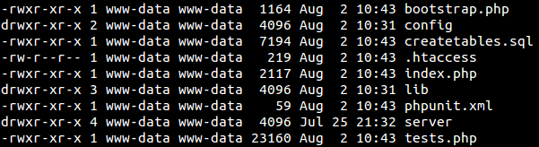
Apache virtual host configuration
By default, Apache 2.4 on Ubuntu 16.04 serves up files from /var/www/html/ using a virtual host that is
enabled. Run the following command to edit the virtual host file:
nano /etc/apache2/sites-available/000-default.conf
Before the closing </VirtualHost> directive insert the following:
<Directory /var/www/html>
Options None
AllowOverride All
Require all granted
</Directory>
This allows Apache to load up the .htaccess file inside the directory which has some additional commands
to block access to every file except the index.php which is where all the API requests are directed to.
Optionally, if you have a domain name you wish to use with the server, you can add the following lines
anywhere inside the VirtualHost directive (replace domain.com with your domain):
ServerName www.domain.com
ServerAlias domain.com *.domain.com
So if you removed all the comments in the file it should look something like this:
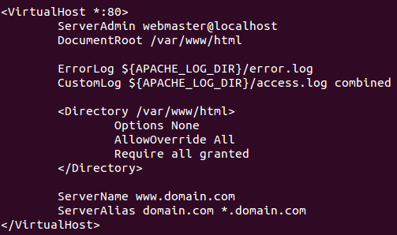
Now restart the web server with the command:
service apache2 restart
Build the Skein library
The Skein 1.3 hash algorithm is used with a 512
bit digest for client authentication with the API. This is written in C and requires an extension to be
compiled and added to PHP. The compilation process puts the compiled file in the correct location for PHP.
First install the PHP module development package using:
apt-get install php7.0-dev
Then, run the following commands:
cd /var/www/html/lib/skein/
phpize
./configure --enable-skein
make
make install
Then edit the php.ini file:
nano /etc/php/7.0/apache2/php.ini
Under the section Dynamic Extensions, add the following on a blank line:
extension=skein.so
It should look like this:
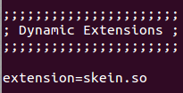
To save and exit, use your keyboard and do Ctrl + X. It will ask if you want to
save the changes, type Y and press Enter. To make sure the changes are applied,
restart the web server with the command:
service apache2 restart
Run the database script
Run the database script createtables.sql to create the database tables on the server. From the Linux command line you
can run:
mysql -u root -p < /var/www/html/createtables.sql
This will prompt you for the MySQL root password you created earlier. If this succeeds you can continue to the next section and
edit the configuration file.
Alternate method A
If you are running Windows, you can also run the database
script very easily by downloading a trial version of SQLYog. You can
do this by connecting via an SSH tunnel to the server and then connect to MySQL from there. For example when creating a new
connection, go to the SSH tab:
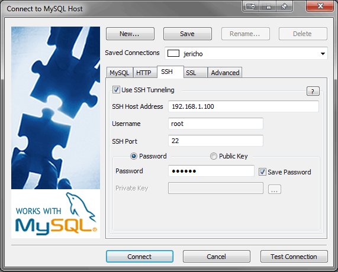
You need to swap out the SSH host address, username and password for your Linux server ones. Then click on the MySQL tab:
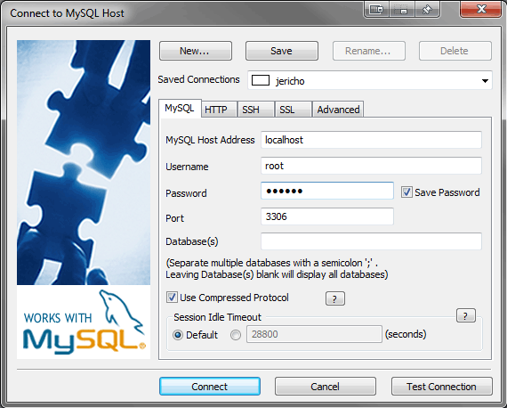
Enter in the root password of MySQL that you created earlier. From there you can click Test Connection to make sure everything
works, then Connect.
Once inside the main program you can go to File -> Open... then select the createtables.sql file on
your hard drive. If you have extracted the files from jericho-v1.5.2.tar.gz using 7-Zip it
should be in the jericho/server/ directory.
Now select all the SQL querry text with the mouse or Ctrl + A. Then you can click the Execute Current Query
button at the top left of the screen which will create the database and tables required:
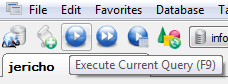
You should see some queries being executed on the database. To verify if the database was created you can click on root@localhost
in the top left corner of the left window then press F5 which will refresh the list of databases. You should see the
jericho database appear in the list.
Alternate method B
If you are using basic shared hosting (non VPS) you might need to include the UNIX socket and full path to the MySQL binary,
for example:
~/private/mysql/bin/mysql --socket=/media/sdm1/home/user/private/mysql/socket -u username -p < createtables.sql
You would need to swap out the path to the socket with the one they gave you. Also change the username variable for your MySQL
username.
Editing the configuration file
Now you need to edit the program's configuration file. You can
do this with the text editor Nano which will be installed by default.
Type nano /var/www/html/config/config.php and it should open.
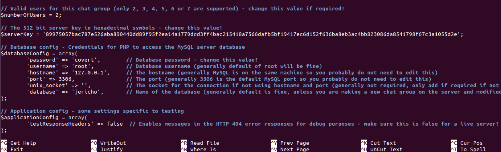
First you need to decide how many users will be in your chat group. You can have 2 - 7 chat users per
group. Simply change the $numberOfUsers variable to have the number of users you want.
For example here is a chat group of 5 users: $numberOfUsers = 5;
The $serverKey variable is used to sign all data going to or from the server using the
Skein-512 hash. This key will be entered into the client application as well and exported for
each user with their one-time pads so they can connect to the server to send/receive messages.
You could actually create the 512 bit key by typing on the keyboard randomly to get 128 hexadecimal
symbols from the lowercase letters a-f and numbers 0-9. However that will not be the most secure option.
The client program can generate a truly random 512 bit server key for you. This can be done using the
TRNG. Open the Jericho Comms client directory, then open index.html with Firefox.
Click the Generate Pads button from the main menu which starts the TRNG. Load up a photo of something random
in nature then click Process. Once processed, click the Export button which opens up a dialog.
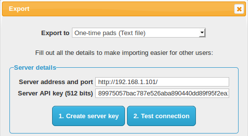
Here you can click Create server key which will extract 512 bits of the random data from the photo. Copy
paste this into the config file like so:
$serverKey = '89975057bac787e526aba890440dd89f95f2ea14a1779dc...2f636ba8eb3ac4bb823086da8541798f67c3a1055d2e';
Remember not to remove the quotation marks around the strings or PHP won't run the code. Copy this key down
as you will need it later to connect from the client.
Next you need to edit $databaseConfig array. The root username
is there already so you don't need to edit that. Replace the password by editing the string next to
it which says covert and put in the password you created for MySQL earlier.
Shared hosting users (non VPS) might also need to edit the UNIX socket and port numbers in the config.php
file with settings provided by the hosting provider.
To save and exit, use your keyboard and do Ctrl + X. It will ask if you want to
save the changes, type Y and press Enter.
Create and install a TLS certificate
Using TLS is not required or recommended for version 1.3 and above, but it can add an additional layer of encryption to disguise the protocol's traffic from low level attackers such as your ISP, work, school or public WiFi users. If you really need this, a guide is available here. Some of the steps may be slightly duplicated in the remainder of this guide.
Setup a new secure browser profile
In this step we will setup a new secure browser or browser profile purely for secure communications. This
is mainly because it's handy to have a separate profile so you don't accidentally erase your one-time pads
whenever you clear your browser history. It also keeps this profile and extensions separate so nothing
can maliciously copy your one-time pads. An extra layer of security would be to install the browser/browser
profile into an encrypted volume,
so it's encrypted on the storage device as well.
For portability you can download the latest version of Firefox Portable
from here and install it. If you want
to chat from multiple computers, install it onto a USB drive. There exists portable
versions of Chromium as well but
this guide will just cover Firefox for now.
Alternate method
If you just want to use your existing Firefox install you can follow these instructions to set up a new profile. The -no-remote option may come in handy when you want to run multiple separate Firefox profiles at the same time.
Securing your new Firefox profile
This section follows some steps to lock down your browser profile so it is as secure as possible and will only be used for chatting with this program.
Disabling default plugins in the browser
Now we will disable all the default browser plugins as they are not required and are a potential security hole.
Open the Firefox main menu then click on Add-ons

Then click on Plugins in the left side menu. For every plugin change the option to Never Activate:

Restart the browser for all the changes to take effect. That covers the basic steps to secure the browser profile. If you have
set this up on a portable Firefox install, be sure to copy that install for the other user onto a USB drive so they don't need
to repeat the process.
Setting up the firewall
Now we're going to configure a basic firewall so only SSH and HTTP traffic will be allowed through to the
web server. This is a simple way to setup an iptables firewall configuration using
UFW.
First set the default configuration to deny everything:
ufw default deny
Now we allow only SSH and HTTP traffic through:
ufw allow 22
ufw allow 80
Enable logging:
ufw logging on
Turn it on:
ufw enable
Test it and view rules:
ufw status

Now the firewall is enabled and logging. There are potentially other advanced configuration options you could use to harden
up the firewall and server more. You will need to do some more of your own research for that. The current configuration will
allow any IP to connect on those ports. If the IP address of you and your chat partner can change (ie dynamically assigned
from your ISP) then this is fine.
If both chat partners have static IP addresses you could restrict access to only those IPs through the
firewall. If both chat partners are in the same country you could only allow IPs from that country to connect. If both chat
partners are outside the US and in different countries you could potentially
firewall off the entire US from connecting to your
server. That would help mitigate the NSA and their Tailored Access Operations
team from finding your server easily.
Other options include changing the default SSH port to a random one. While not increasing the security it will cut down
the number of entries in the log file from basic attackers scanning for servers with the default SSH ports open. If you get log
attempts after changing the port then it would more likely indicate a targeted attack.
Network Time Protocol configuration
The server authentication protocol relies on both the client and server being time synchronised relatively closely. Messages are sent with a UNIX timestamp and if they are received outside of a one minute window then they are rejected by the server as an attacker could be delaying, reordering or replaying messages.
Automatic install
First check which version of the NTP package can be installed using
APT:
apt-cache policy ntp
If the version shown is ntpd 4.2.8.p4 or later then you can simply install it using:
apt-get install ntp
If the version available from APT is less than 4.2.8.p4 e.g. 4.2.6.p5 then you will need
to manually install the latest version from the ntp.org website
to mitigate a new attack
which could allow an attacker to arbitrarily set your server time and therefore block the
clients from connecting.
Manual install
The manual install procedure is as follows:
cd ~
wget http://www.eecis.udel.edu/~ntp/ntp_spool/ntp4/ntp-4.2/ntp-4.2.8p4.tar.gz
md5sum ntp-4.2.8p4.tar.gz
sha384sum ntp-4.2.8p4.tar.gz
Check that the results match the hashes below or your might have a bad file:
MD5: 6af96862b09324a8ef965ca76b759c8b
SHA2-384: c09e36a467b764aabb143668137cb752a42af0e4e2162131f82b234686dfcc7892ab821295ea8e596248cbf1c50e4479
If the hashes match, extract the files and install:
tar xvfz ntp-4.2.8p4.tar.gz
cd ntp-4.2.8p4/
./configure
make
make install
Post installation
After installation, to get the server time in sync, run the following commands:
service ntp stop
ntpd -gq
service ntp start
The -gq parameter tells the ntp daemon to correct the time regardless of the
offset (g) and exit immediately (q). After this run the command:
date
Check that this time is within a few seconds of the time on your PC's clock. Your PC may need
to be synchronized to an NTP server as well but usually this is done automatically.
Keeping the clock synced
It is important to keep the time regularly synced to an NTP server or it will eventually drift out of sync by several
seconds or minutes. First create a simple time sync script:
cd ~
nano timesync.sh
Paste the following text into the text file using Nano:
#!/bin/sh
service ntp stop
ntpd -gq
service ntp start
Save and exit the file (Ctrl + X then Y then Enter). Now make the script executable with:
chmod +x timesync.sh
Edit the crontab to schedule the script to run:
crontab -e
Note: It may ask you to choose the editor, for this you should choose Nano. Paste the following at the end of
the text file:
00 3,15 * * * /root/timesync.sh
@reboot /root/timesync.sh
Save and exit the file (Ctrl + X then Y then Enter). Now the script will sync the server's clock to an NTP server
at 3am and 3pm every day and whenever the server boots up.
Test the server code
Now we can test the connection to the server. The client program will do that automatically for you. If
you still have the Export dialog open from earlier you can enter your server IP address and the matching
server key from the config file then click Test server connection. If you closed the page from earlier,
there is also a Test server connection button on the main menu.
If it is still not working, you can try setting the testResponseHeaders key to true
in the $applicationConfig array of the /var/www/html/config/config.php file. This
enables a more specific error message to be sent back with the HTTP/1.1 404 error response code.
The Web Developer console in Firefox can view the error message sent back. This is found under
Tools -> Web Developer -> Web Console or simply Ctrl + Shift + K to open it. Once installed, simply
press F12 and it will open. Then retry the connection and view the error. That will give you a clue about
what needs to be fixed:
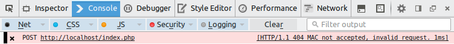
If you notice some sort of database error it probably means your database password (in the config.php
file) is incorrect. Either that or other database connection details may be incorrect. Basic shared hosting
users (non VPS) might also need to edit the UNIX socket and port numbers in the config.php file
with settings provided by the hosting provider.
If the error is something about the timestamp being incorrect, perhaps your PC and the server are not
synchronized to an NTP server. Try updating both then try again. Do not connect to NTP servers run by
the NIST.
If the MAC is incorrect then you likely don't have the same key on the server as the client.
Remember to set the testResponseHeaders key to false once you have resolved the
issue, otherwise this leaves clues for an attacker.
Summary
To sum up we configured Linux, Apache, PHP, MySQL and the server side of Jericho Comms. We setup a separate
secure browser profile, then we configured a firewall to protect the server.
If Firefox portable was used to setup a secure browser profile, you can copy that installation directory to a removable storage
device (e.g. USB drive) and give that to the other chat partner. That saves them time in setting up the browser and loading the
certificate. Usually one person (probably the person following this guide) may be more technically minded than the other person so
it's important to make the process as easy as possible for the other person.
This covers the basics of configuring a secure web server. There are probably many other things that can be done to lock it
down even further. For example, using SSH keys
for logging into the server with SSH. You should do your own research in this area. At the end of the day the server basically
functions as dead-drop for the encrypted communications. Nothing actually
sensitive is stored on it, only encrypted messages. These are secured by a one-time pad and can't be decrypted without the
correct key.
However you do not really want to advertise the server's existence. You only want yourself and your chat partner to know about it.
If the NSA find out about it and their TAO team decide to
target you, there won't be much you can do to stop them. They have teams of hackers working on
zero-day exploits for most software and firewalls. If they want in,
they will probably find a way. If you find they are targeting your server it is best to try initiating the auto nuke to clear
any remaining server messages, abandon the server and then create a new one somewhere else.
You can continue with the client installation guide now.